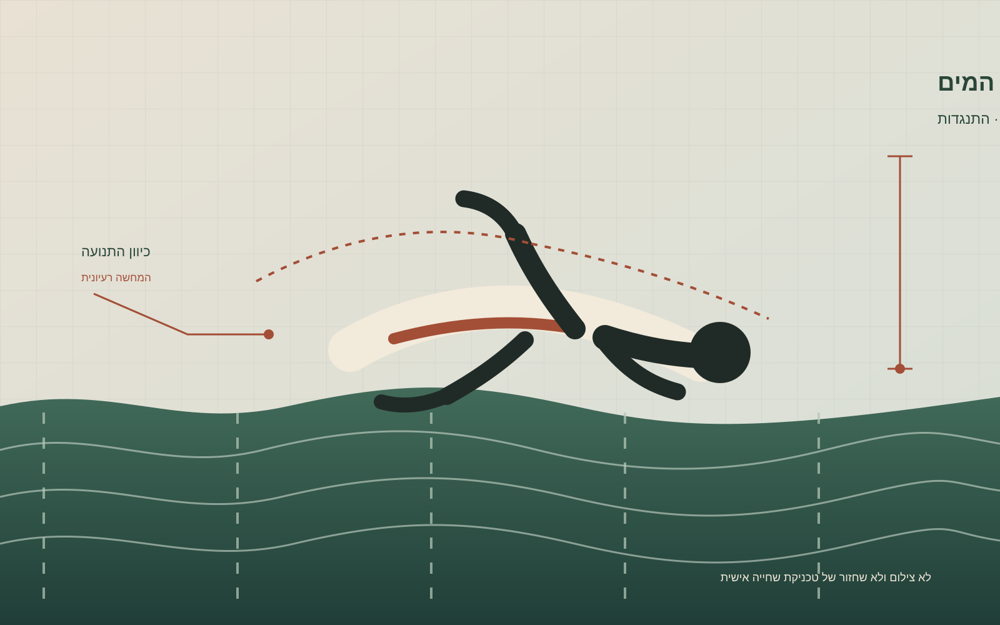
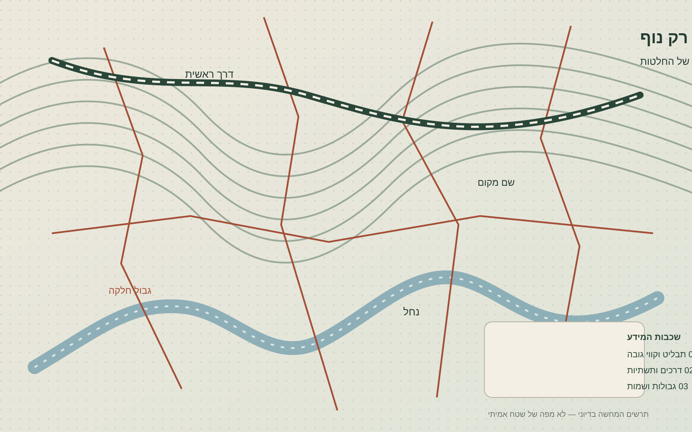

ספורט פאראלימפי · קרטוגרפיה · פילוסופיה של המדידה
שלוש דרכים למדוד אדם: ברוך פרצמן בין המים, המפה והשם
הוא זכה בזהב פאראלימפי, עבד בקרטוגרפיה והצטרף לוועדת השמות הממשלתית. סיפורו פותח חלון לשאלה עמוקה: מה אנחנו מודדים כשאנחנו מודדים גוף, שטח או מקום — ומה נותר מחוץ למדידה?
ב־8 בנובמבר 1972, במהלך פעילות מבצעית באזור תעלת סואץ, צלח ברוך פרצמן עם חבריו לשייטת 13 את התעלה ועלה על מוקש. גופו נפגע קשה; הוא איבד יד ועין. שמונה שנים אחר כך, בבריכת השחייה של המשחקים הפאראלימפיים בארנהם שבהולנד, הופיע שמו בטבלת התוצאות: מקום ראשון במשחה 50 מטר חזה ושלושה מקומות שניים נוספים. הרצף הזה מזמין סיפור מוכר על כוח רצון ועל התגברות, אבל הוא מסביר מעט מדי. הוא מסתיר את האימון, את המכניקה של הגוף, את שיטת הסיווג שקובעת מי מתחרה במי, ואת המוסדות שמאפשרים למדוד הישג.
החלק המעניין פחות צפוי: פרצמן לא נשאר רק בעולם הספורט. בהמשך עבד בקרטוגרפיה, עמד בראש אגף במרכז למיפוי ישראל, ובינואר 2022 מונה לחבר בוועדת השמות הממשלתית. שלוש התחנות האלה — שחייה תחרותית, יצירת מפות וקביעת שמות — נראות במבט ראשון רחוקות זו מזו. למעשה, כולן עוסקות בשאלה כיצד הופכים מציאות מורכבת לדבר שאפשר לתאר, להשוות ולפעול לפיו. הגוף נעשה תוצאה; פני הארץ נעשים מפה; מקום נעשה שם רשמי. בכל מעבר כזה יש ידע, אך גם בחירות שמעצבות את מה שנראה לעין.

הישג ספורטיבי הוא גם מערכת מדידה
ארכיון התוצאות הרשמי של הוועד הפאראלימפי הבינלאומי (IPC) מתעד את הישגיו של פרצמן. בארנהם 1980 הוא זכה בזהב ב־50 מטר חזה, ובכסף ב־50 מטר חופשי, 50 מטר גב ובמשחה מעורב אישי 3×50 מטר. במשחקים שנערכו ב־1984 בסטוק מנדוויל ובניו יורק הוסיף שלוש מדליות כסף ומדליית ארד. בסיאול 1988 התחרה בארבעה משחים וסיים במקומות הרביעי והחמישי. בסך הכול מונה הפרופיל הרשמי שלו מדליית זהב אחת, שש מדליות כסף ומדליית ארד אחת. אלה אינם זיכרונות כלליים או תיאור עיתונאי בדיעבד, אלא רישום תחרותי שאפשר לבדוק בפרופיל הספורטאי באתר IPC ובארכיון תוצאות השחייה של ארנהם 1980.
אלא שטבלת מדליות אינה מספרת כיצד נוצר ההישג. שחייה אינה רק הפעלת שרירים כדי להתקדם קדימה. הגוף צריך לייצר דחף, לצמצם התנגדות למים, לשמור על מנח יציב ולתאם בין תנועות הגפיים, הגו והנשימה. שינוי במבנה הגוף משנה את כל המערכת: הוא עשוי להשפיע על האיזון, על גלגול הכתפיים, על שטח החזית שפוגש את המים ועל חלוקת העבודה בין חלקי הגוף. במים, איבר אחד אינו פועל לבדו; כל תנועה משנה את התנאים שבהם מתרחשת התנועה הבאה.
מחקר שפורסם ב־2019 בכתב העת Sports Biomechanics בחן שלושה שחיינים עם קטיעה חד־צדדית של הזרוע, ובהם שחיין אחד שזכה במדליה פאראלימפית. החוקרים מדדו את תנועת הכתפיים, האגן, הברכיים והקרסוליים בזמן שחיית חתירה. הם מצאו אצל שלושת השחיינים גלגול כתפיים גדול יותר לכיוון הצד הפגוע, ובין המשתתפים ניכרו הבדלים בתדירות התנועה ובאופן שבו גל הגוף התקדם לאורך הגוף. זהו מחקר קטן, ואסור להפוך אותו לחוק כללי או לייחס את הממצאים לפרצמן: אין בו בסיס לקביעה שהוא היה אחד המשתתפים או ששחה באותה טכניקה. חשיבותו אחרת — הוא מראה שהסתגלות בספורט אינה רק החלפה של איבר חסר בתנועה חלופית, אלא ארגון מחדש של מערכת שלמה.
כאן נפגשים סיפורו של שחיין והפיזיקה של נוזלים. הצלחה במים אינה נמדדת רק בכוח שהגוף מסוגל להפעיל, אלא גם באופן שבו הוא מעביר את הכוח לסביבה ומנהל את ההתנגדות שהיא מפעילה עליו. מדע השחייה משתמש במדדים כמו תדירות תנועות, אורך מחזור, מהירות, גלגול הגוף וגרר — הכוח שמאט גוף הנע במים. המדדים האלה אינם מבטלים את המיומנות האנושית; הם עוזרים להבין אותה. הם גם מזכירים שהישג ספורטיבי הוא תוצאה של טכניקה מותאמת, אימון, תנאי תחרות ומערכת כללים, ולא של תכונה אחת שאפשר לכנות בפשטות ״רצון״.
סיווג: הניסיון להפוך תחרות להוגנת
בספורט פאראלימפי יש בעיה שאינה קיימת באותה צורה בתחרות שחייה רגילה: כיצד לקבוע מי מתחרה במי, כאשר לקות גופנית עשויה להשפיע באופן שונה על ביצוע המשחה? אם כל בעלי הלקות יתחרו יחד, פערים תפקודיים גדולים עלולים להכריע את התוצאה עוד לפני שהמיומנות והאימון באים לידי ביטוי. אם ייווצרו קטגוריות רבות מדי, בכל אחת יישארו מעט מתחרים, ולעיתים לא תהיה תחרות ממשית. הסיווג הוא אפוא ניסיון לאזן בין שני עקרונות: התאמה בין מתחרים וצמצום מספר הקטגוריות.
בארכיון התוצאות של פרצמן מופיעים הסימונים F במשחקי 1980 ו־A6 במשחקי 1984. אלה הסיווגים שהופיעו ברישומים של אותן תחרויות; אין להמיר אותם באופן אוטומטי לשמות הקטגוריות הנהוגים כיום. מערכת השחייה הפאראלימפית המודרנית משתמשת, בין היתר, בסימונים S לשחיית חופשי, גב ופרפר, SB לחזה ו־SM למעורב. לפי הסבר ה־IPC, הסיווג אינו נקבע רק לפי שם האבחנה הרפואית, אלא לפי האופן שבו הלקות משפיעה על ביצוע המשימות הנדרשות בענף. לכן שתי לקויות שונות עשויות להוביל לאותה קטגוריית תחרות, ואותה לקות עשויה להשפיע אחרת בענפי ספורט שונים. פירוט העקרונות מופיע במדריך הסיווג הרשמי לשחייה פאראלימפית.
זהו קשר מעניין לפילוסופיה של המדע: קטגוריה אינה בהכרח תיאור של מהות האדם, אלא כלי שנבנה כדי לענות על שאלה מסוימת. סיווג ספורטיבי אינו אומר מי האדם, מה ערכו או מה הוא מסוגל לעשות בכל תחום. הוא מנסה לאמוד כיצד הבדל מסוים משפיע על ביצוע של משימה מוגדרת. כמו כל מודל, הוא שימושי מפני שהוא מפשט את המציאות; וכמו כל מודל, הוא עלול להחמיץ פרטים. ההכרעה אילו הבדלים חשובים, כמה קבוצות ליצור ואיך לבדוק אותן היא גם הכרעה ערכית. הוגנות אינה מתקבלת אוטומטית ממספרים — היא תלויה באופן שבו בוחרים למדוד.
מן הבריכה אל המפה: איך הופכים מרחב לידע
התחנה המקצועית המאוחרת של פרצמן הייתה קרטוגרפיה — תורת יצירת המפות. תרשים ארגוני של המרכז למיפוי ישראל שפורסם ב־2014 מציג אותו כמנהל אגף פרודוקציה קרטוגרפית ומיפוי ימי. זהו תפקיד במוסד שמייצר מפות רשמיות, ולא עיסוק אסתטי בלבד. לפי תיאור מחלקת הקרטוגרפיה של המרכז למיפוי ישראל, המפות הרשמיות משמשות את הציבור ואת מוסדות המדינה; תחומי הפעילות כוללים מפות מודפסות ודיגיטליות, מאגרי מידע גאוגרפיים ומיפוי ימי. מאגר הנתונים הטופוגרפי הלאומי כולל שכבות מידע על מבנים, דרכים, כתובות, נחלים, שטחי מים ושימושי קרקע.

מפה כזאת היא תשתית לקבלת החלטות. היא מאפשרת לתכנן כביש, לאתר תשתית, לנהל רישום מקרקעין, לתכנן שירותי חירום או להעריך שינוי סביבתי. אבל היא אינה העתק שקוף של העולם. כל מפה בוחרת קנה מידה, סימנים, גבולות, שמות ורמת פירוט. קנה מידה עירוני יבליט רחובות ומבנים; מפה אזורית עשויה להעלים אותם ולהדגיש רכסי הרים ודרכים ראשיות. שכבה שאינה נכללת אינה בהכרח חסרת חשיבות — היא פשוט אינה חלק מן השאלה שהמפה נועדה לענות עליה.
ההבנה הזאת עומדת בלב מאמרו הקלאסי של הגאוגרף ג'ון בריאן הארלי, ״פירוק המפה״ (Deconstructing the Map), שפורסם ב־1989. הארלי טען שיש לקרוא מפות לא רק כמוצרים מדעיים, אלא גם כייצוגים הנושאים יחסי כוח. שלטון, מוסדות ובעלי אינטרסים משפיעים על מה שמסומן, על מה שנותר מחוץ למסגרת ועל האופן שבו מקום מוצג. אין פירוש הדבר שכל מפה היא תעמולה או שכל נתון בה שקרי. פירוש הדבר שגם מפה מדויקת מבחינה גאומטרית נשענת על החלטות אנושיות: מה למדוד, באיזו שפה, באיזה קנה מידה ולשם איזו מטרה.
השם שעל המפה הוא חלק מן המפה
הקרטוגרפיה אינה מסתיימת בקווים ובקואורדינטות. על המפה מופיעים שמות — של יישובים, הרים, נחלים, רחובות ואתרים. התחום העוסק בשמות גאוגרפיים נקרא טופונימיה. שם מקום עשוי לשמר שפה, מסורת, זיכרון היסטורי או טענה לריבונות. כאשר שם נכנס למפה רשמית, הוא הופך ממילה בשימוש מקומי לנתון שמופיע במסמכים, במערכות ניווט, בתכנון ובשירותים ציבוריים. לכן השאלה ״איך קוראים למקום?״ אינה רק שאלה לשונית; היא גם שאלה על סמכות ועל זיכרון ציבורי.
המרכז למיפוי ישראל מציין כי הכיתוב במפותיו נעשה בהתאם להחלטות ועדת השמות הממשלתית ולכללי האקדמיה ללשון העברית, וכי המידע מוצג בעברית, באנגלית ובערבית. ההרכב של ועדת השמות עצמה מלמד עד כמה ההכרעה רב־תחומית. בהחלטת ממשלה 1018 מ־23 בינואר 2022, שבה חודשו מינויים ונוספו חברים לוועדה לחמש שנים, נכללו גאוגרפים, היסטוריונים, בלשנים, חוקרי ארץ ישראל, סופרים ונציגי מוסדות ציבור. פרצמן מופיע בהחלטה כאחד החברים החדשים, המתואר כגמלאי של המרכז למיפוי ישראל. אפשר לקרוא את נוסח ההחלטה באתר משרד ראש הממשלה וגם בעותק הקריא של מפתח התקציב.
אין במסמך מידע על החלטה מסוימת שקיבל פרצמן, ואין סיבה לייחס לו עמדה שלא תועדה. אבל עצם המינוי מאיר את הקשר בין מדידה לשפה. אדם שמגיע מעולם המפות מצטרף לגוף שבו נדרשים לשקול היסטוריה, לשון, גאוגרפיה וזהות ציבורית. מקום אינו רק נקודה על פני הארץ; הוא גם סיפור שמישהו בחר לספר עליו. קואורדינטה יכולה לקבוע היכן נמצא אתר, אך השם קובע כיצד הציבור יזהה אותו ויזכור אותו.
מדידה אינה רק גילוי של מה שכבר נמצא בעולם. היא גם בחירה בשאלה, ביחידת ההשוואה ובשפה שבה נציג את התשובה.
הביוגרפיה של פרצמן אינה מוכיחה שהוא עצמו ניסח את הקשרים האלה, ואין צורך להעמיס עליו סמליות שלא ביקש לעצמו. היא כן מציבה אדם אחד בשלושה מרחבים שבהם המדידה חיונית: הגוף במים, המרחב במפה והמקום בשפה. בכל אחד מהם מדידה מאפשרת להשוות, לתכנן ולהחליט; ובכל אחד מהם היא משאירה משהו בחוץ. השאלה החשובה אינה אם אפשר למדוד באופן מושלם — בדרך כלל אי אפשר — אלא אם אנחנו יודעים להסביר מה המדד כולל, מה הוא משמיט, ומי מוסמך לבחור אותו.
זהו אולי הלקח הרחב ביותר בסיפור הזה. תוצאה ספורטיבית, מפה רשמית ושם מקום נראים כמו עובדות מוצקות, אך מאחוריהם עומדים מודלים, כללים ומוסדות. הם אינם הופכים את המציאות לפחות אמיתית; הם קובעים כיצד נוכל לפעול בתוכה. הבנה רצינית של ידע מתחילה כאשר מפסיקים להתייחס למדידה כאל חלון שקוף, ומתחילים לבדוק גם את המסגרת שסביבו.
- פרצמן זכה בזהב ב־50 מטר חזה בארנהם 1980, ובסך הכול במדליית זהב אחת, שש מדליות כסף ומדליית ארד אחת במשחקים הפאראלימפיים.
- שחייה היא בעיה של דחף, התנגדות, איזון ותיאום — לא רק כוח שרירים.
- סיווג פאראלימפי הוא כלי תחרותי שמנסה לצמצם את השפעת הלקות על התוצאה; הוא אינו תיאור כולל של האדם.
- מפות הן מודלים של המרחב, ותפקידן תלוי גם בבחירות של קנה מידה, שכבות, גבולות ושמות.
- שם מקום הוא נתון גאוגרפי וגם נשא של זיכרון, שפה וסמכות ציבורית.
שלוש שאלות למחשבה
- האם אפשר ליצור תחרות הוגנת באמצעות סיווגים, בלי שהסיווג עצמו יהפוך למגבלה או להכללה גסה?
- כאשר מפה רשמית משמיטה פרט מסוים, מי צריך להחליט אם הוא חשוב מספיק כדי להופיע בה?
- האם שינוי של שם מקום משנה רק את האופן שבו מדברים עליו, או גם את האופן שבו הציבור מבין את ההיסטוריה שלו?
לקריאה נוספת
- הוועד הפאראלימפי הבינלאומי — פרופיל ברוך פרצמן ותוצאותיו.
- World Para Swimming — עקרונות הסיווג בשחייה.
- מחקר על גלגול הגוף בשחיינים עם קטיעה חד־צדדית של הזרוע, Sports Biomechanics, 2019.
- המרכז למיפוי ישראל — תרשים ארגוני, ינואר 2014.
- המרכז למיפוי ישראל — מחלקת הקרטוגרפיה; מאגר הנתונים הטופוגרפי הלאומי.
- J. B. Harley, “Deconstructing the Map”, Cartographica, 1989.
- החלטת ממשלה 1018 — מינוי חברים לוועדת השמות הממשלתית, 23 בינואר 2022.
הערך המקורי שנשלף באקראי: ברוך פרצמן — ויקיפדיה העברית. הערך נבחר באמצעות Wikipedia API מתוך מרחב הערכים הראשי (namespace 0), ולא מתוך רשימה ידנית.